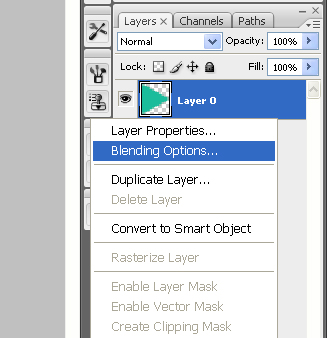
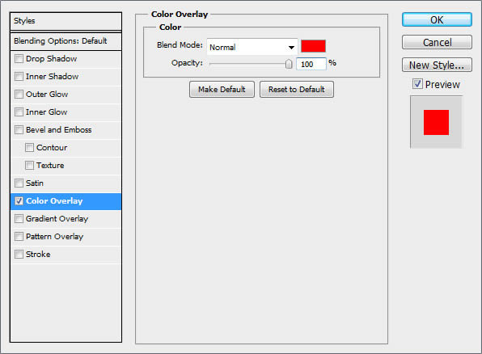
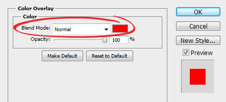
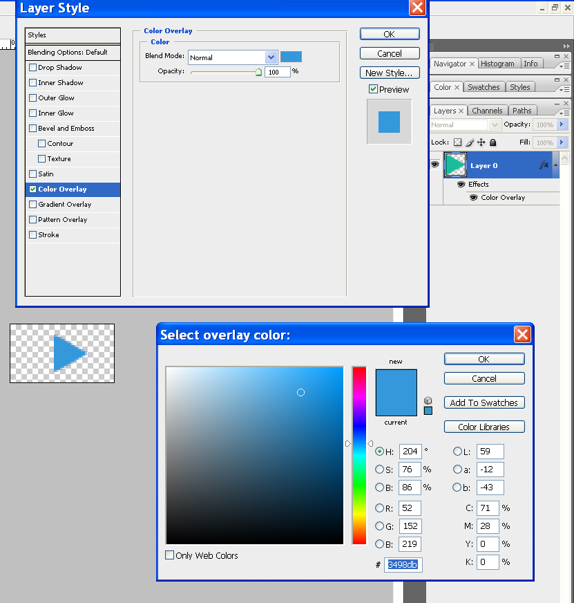
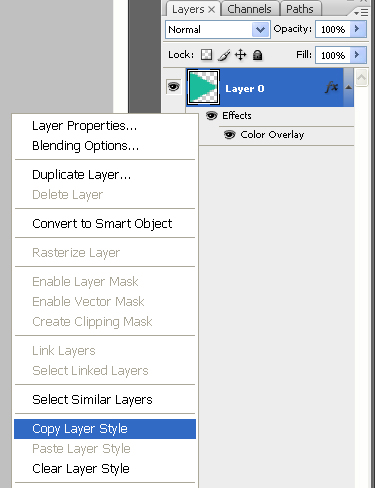

Flat skin are simple PNG images and some PSD for complex PNG. But You can easily change the color of a PNG image in Photoshop using the color overlay layer effect.
Open a .png file in Photoshop CS
Right-click on "Layer 0" and choose "Blending Options"

In the resultant dialog, select "Color Overlay" from the left-hand pane

And then double click the red color swatch to change the color

Choose a new color and click OK to save your changes

You can "Copy Layer Styles" and "Paste Layer Styles" for apply color for other icons
